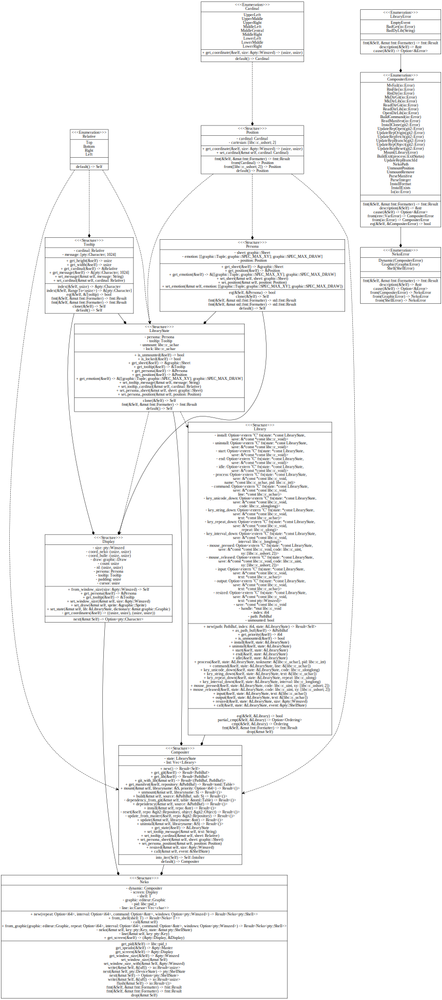

Crate neko [−] [src]
neko
This library contains the module graphic and dynamic.

Reexports
pub use display::Display; |
Modules
| display |
The module |
| dynamic |
The module |
| graphic | |
| prelude |
The module |
| pty |
Macros
| account_at_rep | |
| format_subneko | |
| format_subneko_err | |
| only_rep | |
| parse_number | |
| symbol |
Structs
| Neko |
The module |
Enums
| NekoError |
The enum |
Constants
| SPEC_ROOT |
The first directory. |
| SPEC_ROOT_DEFAULT |
The default first directory. |
Traits
| Parent |
Type Definitions
| PtyDisplay | |
| Result |